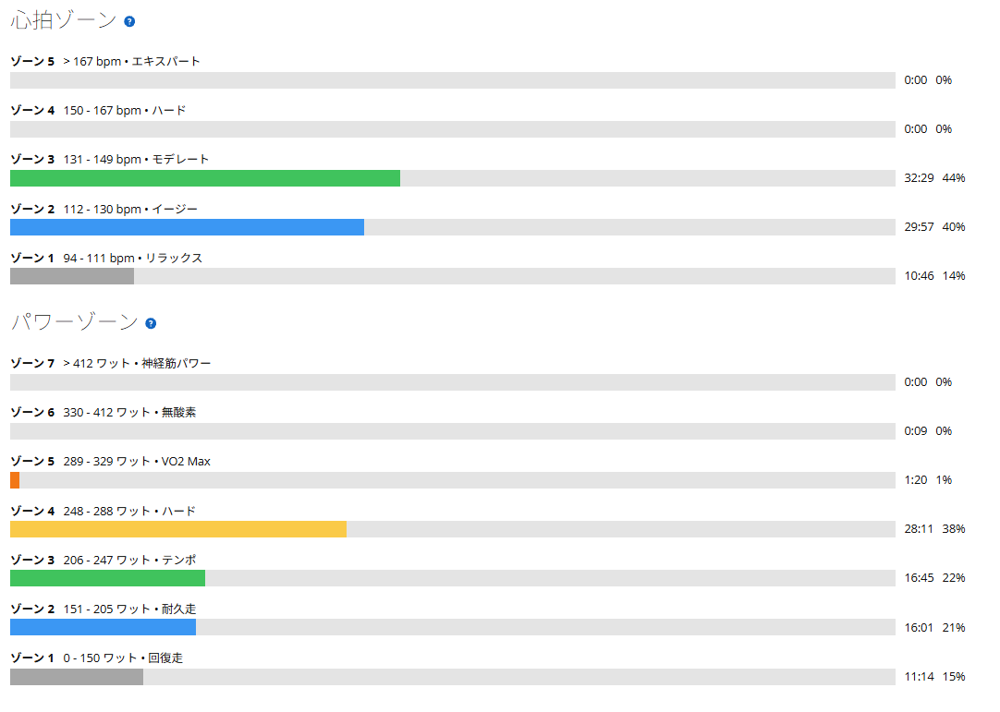
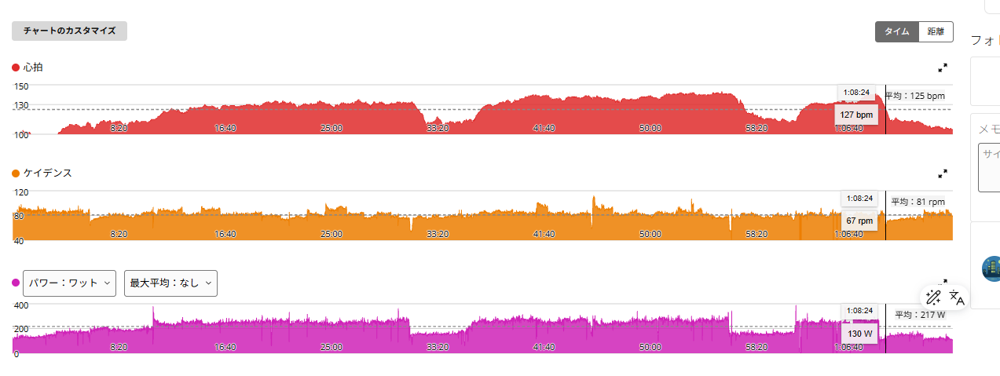

SST20分×2本と6分。完遂できない日が続いても、0点にはしない
今日はローラーでSST20分×3本。レスト5分。最近はこのメニューを完遂できるところまで来ていた。
ただ、昨日の5分走では315W×5分×5本を予定していたものの、3本で気持ちが切れて終了。そして今日も、身体より先に気持ちの方が折れた。

1時間13分・NP231W・TSS86.1
- 全体37.98km / 1時間13分44秒 / 平均217W / NP231W / IF0.840 / TSS86.1
- 心拍・回転平均125bpm / 最大143bpm / 平均81rpm
- 効果有酸素TE3.4（ベース）/ 無酸素TE0.0 / 運動負荷122
メニュー完遂には届かなかったが、トレーニングとして何もできなかった日ではない。パワーはゾーン4に28分11秒、ゾーン3に16分45秒入っている。
247W・258W、そして3本目は6分で終了
- 1本目20分02秒 / 247W
- 2本目20分02秒 / 258W
- 3本目6分09秒 / 252W（ここで終了）
パワー自体は出ている。1本目より2本目の方が高く、3本目も252Wで走れていた。脚が完全に売り切れたわけでも、呼吸が限界だったわけでもない。
ちなみに2本目の258Wは、これまでの20分×3の2本目（8月18日240W、8月30日254W、9月7日247W、9月11日253W）の中で一番高い。

また気持ちが先に折れた
昨日の5分走と同じである。身体が動かないというより、「今日はもうここまででいいかな」という気持ちが先に来た。昨日は315W×5分を3本。今日は20分走を2本と、3本目を約6分。2日続けてメニュー完遂はできなかった。
ただ、昨日も今日も、出力そのものは出ている。だから今の状態を「弱くなった」と考えるのは違うと思っている。
重心のかけ方を変えたら、心拍が上がらなかった
今日はもう一つ、試していたことがある。ペダルを踏むときの重心のかけ方を少し変えてみた。どう変えたのかと聞かれると、正直まだうまく言語化できない。主観になってしまうが、結果として回し方がスムーズになった感じはある。
結果として、心拍は上がらないままパワーが出た。今日の最大心拍は143bpmで、心拍ゾーン4（150bpm以上）には1秒も入っていない。
- 9月11日（3本完遂）2本目253W / 最大心拍167bpm / 心拍Z4 29分54秒
- 今日2本目258W / 最大心拍143bpm / 心拍Z4 0秒
出力は今日の方が高いのに、心拍は20bpm以上低い。9月14日の太平山でも、一瞬だけ前ももが噛み合うと妙によく進む感覚があった。身体の使い方という意味では、同じ流れの話なのかもしれない。いい方向なのではないかと思っている。
ただ、まだ検証途中で分からないことも多い。心拍が上がりにくいのは、疲れが溜まっているときにも起きることがあるらしい。ここ数日は大那、太平山、5分走と続いていたので、今日一日だけでは、重心のかけ方を変えた効果なのか疲れなのかは切り分けられない。そこはこれから確かめていく。
毎年、秋は気分の上下が出やすい
自分の場合、季節の変わり目、とくに秋になると毎年気分の上下が起こりやすい感覚がある。トレーニングをやる気満々の日もあれば、急に気持ちが続かなくなる日もある。今年も少しその時期に入ってきたのかもしれない。
だから今後も、予定したメニューを完遂できない日は出てくると思っている。ここで毎回「また失敗した」「前より弱くなった」と考えていたら、たぶんトレーニングそのものが嫌になってしまう。それなら今は、「できる範囲で続ける」くらいでいい。
現状維持を最低限の目標にする
もちろん、富士ヒルゴールドを目指しているので強くなりたい。315W×5分×5本もやりたいし、SST20分×3本ももっと余裕を持って完遂したい。ただ、毎日右肩上がりに進むわけではない。
今みたいに気分が安定しない時期は、ローラーに乗る、SST強度に触れる、高強度を完全にやめない、できるところまで続ける。これだけでも十分だと思っている。
今日は20分走を2本、さらに3本目に入って約6分。予定した60分には届かなかったが、約46分はSST付近で走れている。完全にゼロではない。
今日やってみて思ったこと
最近は、メニューを完遂できるかどうかに少し意識が寄りすぎていたかもしれない。完遂できればもちろん嬉しい。でも、できなかったからといって、その日のトレーニングが全部無駄になるわけではない。今日は247Wで20分、258Wで20分、その後も252Wで約6分。
今の自分に必要なのは「毎回100点を取ること」ではなく、「調子が悪い時期でも0点にしないこと」なのかもしれない。調子が戻ってきたら、また普通に全部やればいい。今はそういう時期として付き合っていく。
それと、今日の重心のかけ方。ペダリングの効率化は、これからの課題になってくると思っている。まだ言語化もできていないし、分からないことも多い。だからこそ、もっと突き詰めたい。
次に見るポイント
- SST20分×3本を基本にしつつ、2本で終わっても続けて乗る
- 5分走315W×5本を目標にしつつ、3本で終わる日があっても高強度には触れる
- 重心と心拍今日の重心のかけ方で、同じ出力でも心拍が低いままか。気持ちが乗っている日にも再現できるか
- 疲労との切り分け重心のかけ方を変えていない日にも心拍が上がらないなら、疲れを疑う
- やめない完全にゼロの日を作らない。現状維持を最低ラインにする